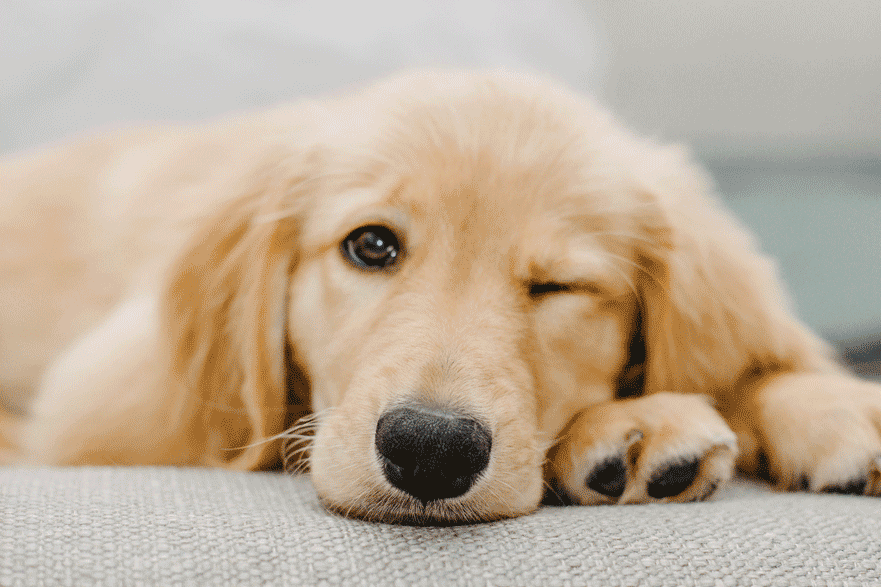

Husdjurvård och veterinärservice är två hörnstenar i att skapa en hälsosam och lycklig tillvaro för våra fyrbenta vänner. Husdjurvård innefattar en bred palett av åtgärder och kunskaper som syftar till att möta behoven och främja välbefinnandet hos husdjur. Det inkluderar regelbunden träning, näringsriktig kost, mental stimulans och skapandet av en trygg och kärleksfull hemmiljö. Genom att förstå djurens naturliga beteende och behov strävar husdjurvård efter att skapa en balanserad livsstil för djur och deras ägare.
Veterinärservice går ett steg längre genom att tillhandahålla medicinsk expertis och vård. Veterinärer är specialiserade inom diagnostik, behandling och förebyggande av sjukdomar hos djur. Denna tjänst omfattar allt från regelbundna hälsokontroller och vaccinationer till akutvård och kirurgiska ingrepp. Veterinärer spelar en avgörande roll i att säkerställa att våra husdjur lever långa, friska liv.
PetPals är dedikerade till att erbjuda en omfattande plattform som integrerar både husdjurvård och veterinärservice. Genom att kombinera expertis och passion strävar vi efter att skapa en gemenskap där husdjur får den vård de förtjänar och ägare får den kunskap och stöd de behöver för att skapa en trivsam miljö för sina älskade vänner.

Om du nu behöver professionell veterinärvård hittar du här våra åtta veterinärer som står redo att erbjuda högkvalitativ och medkännande vård. Oavsett om det handlar om förebyggande hälsoundersökningar, akutvård eller specialiserad behandling, är vi här för att ge ditt husdjur den bästa möjliga vården. Ring bara 070-515 71 75